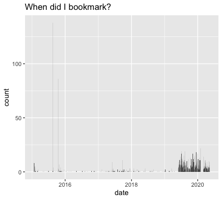

The goal of pinboardr is to interact with the pinboard.in website. You can use this package to
- add new bookmarks,
- delete them,
- extract all bookmarks, or
- to add, modify or remove tags
- and interact with notes endpoint.
Basically everything you can do through the website, but from an R session. This is a full implementation of all the endpoints in https://pinboard.in/api.
All user facing functions start with pb_* , making it easy to use autocompletion in your IDE. Just type pb_ and the suggestions come up.
What is pinboard
Pinboard is a personal archive for things you find online and don’t want to forget. The site has been around since July 2009 and has about 25,000 active users.
If you don’t know what pinboard is, this is not a package for you. If you would like to know more about pinboard, take the tour.
This is NOT a package for ‘pinterest’: An image sharing service. There is a rpinterest package for that.
Installation
You can install the released version of pinboardr from CRAN with:
install.packages("pinboardr")
And the development version from GitHub with:
# install.packages("devtools") devtools::install_github("RMHogervorst/pinboardr")
Credentials
This is a package to interact with ’https://pinboard.in, a payed (not free) bookmarking website. To use this package you need to use your username and token from pinboard. See also ?authentication for more details.
Go to the pinboard password page and scroll down to API Token. It says something like: "this is your API token: username:NUMBERSANDLETTERS My recommendation would be to add this token and username to your local or global .Renvironment file (use for example usethis::edit_r_environ() to find that file on your computer).
Restart your session to make the changes active.
Examples
This part shows you some of the functions implemented in this package.
library(pinboardr)
When was my last update on pinboard?
pb_last_update() #> [1] "2020-08-05T13:06:31Z"
Get your most recent bookmarks (of a certain tag, or globally)
recent <- pb_posts_recent(tags = "inspiration",count = 3) recent[,c("title", "toread","tags")] #> title #> 1 Spijkenisser Eurobruggen (Euro Banknote Bridges) – Spijkenisse, Netherlands - Atlas Obscura #> 2 Incredibox #> 3 How Many of You Are There, Really? #> toread tags #> 1 no inspiration location #> 2 no inspiration music #> 3 no inspiration hardware video
When did I bookmark all my bookmarks?
library(ggplot2) library(dplyr) per_date <- pb_posts_dates() per_date %>% mutate(date = as.POSIXct(date)) %>% ggplot(aes(date, count)) + geom_col()+ labs(title="When did I bookmark?")

Did I read all my bookmarks with the tag inspiration?
all <- pb_posts_all(tags = "inspiration", todt="2020-01-01") table(all$toread) #> #> no yes #> 26 9
Most common tags with inspiration
huge_vec <- unlist(strsplit(all$tags, split=" ")) # note that this is way more intuitive with dplyr # data.frame(vec=huge_vec) %>% group_by(vec) %>% count() %>% arrange(desc(n)) counted <- as.data.frame(table(huge_vec)) top <- counted[counted$Freq >1,] top[order(top$Freq,decreasing = TRUE),] #> huge_vec Freq #> 12 inspiration 35 #> 27 visualisation 11 #> 2 blogidea 6 #> 18 r 3 #> 11 hardware 2 #> 24 space 2
Can we extract all of the bookmarks with the blogidea tag?
all_blogidea <- pb_add_tag_column(all, "blogidea") all_blogidea[all_blogidea$blogidea,c("href","title")] #> href #> 5 https://vincenttunru.gitlab.io/blog/hacking-a-gameshow/ #> 25 https://scrollbars.matoseb.com/ #> 30 https://www.williamrchase.com/post/artistic-coding-for-the-user-12-months-of-art-june/ #> 33 http://tabletopwhale.com/index.html #> 34 https://www.sciencealert.com/these-incredible-infographics-make-instant-sense-of-our-universe-s-data #> 35 https://github.com/Z3tt/satRday2019/blob/master/Scherer_satRday2019_NLMR.pdf #> title #> 5 How I spent way too much effort to win a game show on national television · Vincent Tunru.com #> 25 Evolution of the Scrollbar #> 30 Artistic coding for the useR (12 Months of aRt, June) | Will Chase #> 33 Tabletop Whale #> 34 This Incredible Orbit Map of Our Solar System Makes Our Brains Ache #> 35 satRday2019 berlin landscape generation
Get all tags used
all_tags <- pb_tags_get() # will show all 583 tags I have used head(all_tags, 4) #> tag count #> 1 100DaysToOffload 2 #> 2 1960s 1 #> 3 3d 2 #> 4 ab-testing 1
Please note that the “pinboardr” project is released with a Contributor Code of Conduct. By contributing to this project, you agree to abide by its terms.